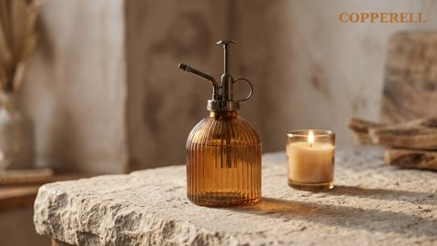
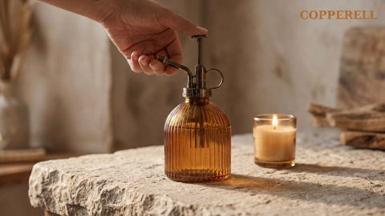
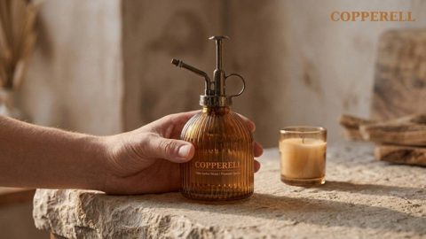
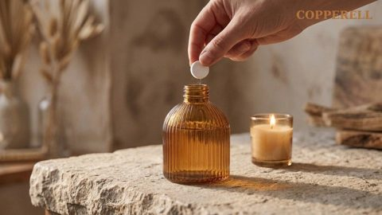
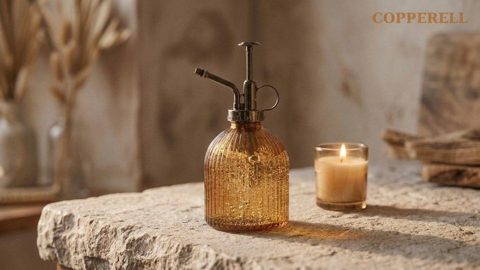
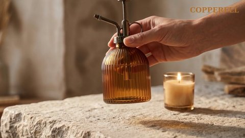
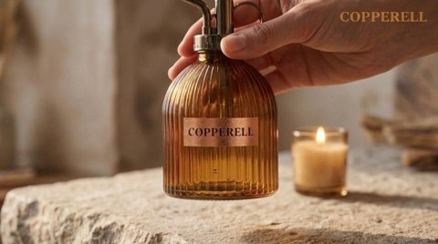

Joined shots become one camera move, each frame drawn from where the film actually got to. Cuts only between groups.
Continuous move · 3 shots · 10 s

1 Counter, wideMorning light
one move

2 Hand lifts bottlePush in
one move

3 Close on bottleLabel
cut
Continuous move · 2 shots · 6 s

4 Tablet dropsWater
one move

5 Fizz, refilledBottle full
cut
End card Refill. Not landfill.
Box 1 · Continuous move · shots 1–3
Continuous moveOne take with cutsEach shot alone
Production suggested this group: shots 1–3 are one moment and one setup (the same counter, the same light). Shot 4 is a new setup, so it starts a new group.
How it is made: shot 1 → shot 2 is one clip. Its real last frame becomes the start of the next clip, and shot 3's frame is redrawn from that last frame ("the same camera, a moment later") so the move can reach it. The frames you drew stay one click away.
WAN 3 · 2 segments · 2 redrawn frames
About $1.10 and 4–6 minutes: 2 clips of 5 s ($0.50 each) and 2 frame redraws ($0.07 each). Segments run one after another, because each starts where the last ended.
Box 1 · Continuous move · shots 1–3
Shot 3 is a big jump from shot 2. The hand is gone and the spray mist has appeared. A continuous move can't get there smoothly: the model would paste the frame in at the end, which looks like a glitch.
"Redraw shot 3 as a moment later" keeps your idea (the spray) but draws it from where shot 2 ends, so the move can reach it.
Making box 1 · continuous move
Segment 1 · shot 1 → shot 2 · 5 sdone · 1 min 40 s
Took the real last frame · trimmed 0 framesdone
Redrawing shot 3 from that frameabout 20 s
Segment 2 · last frame → shot 3 · 5 snext · about 2 min
Join, check for snaps, trimfree
You can close this tab: the box finishes and lands when you come back. $0.57 of about $1.10 spent so far.
Box 1 · v1 · continuous move · 10 s
No snaps: every join and the end are smooth. 2 frames trimmed at the end of segment 2.
Shot 3's frame in the storyboard now shows what was filmed ("From the film"). Your drawing is kept.
Storyboard · box 1 updated to the film
1 Counter, wide

2 Hand lifts bottle From the film

3 Close on bottle From the film
4 Tablet drops
5 Fizz, refilled
The frames inside a continuous group follow what was filmed, so the storyboard matches the ad. Your drawings stay in each frame's history.
Edit · the film
Box 1 · one move
Box 2 · one move
End card
Each continuous box is one clip; the dashed lines are its shots' windows, so you can trim or select a shot without breaking the move. Cuts sit only between boxes. Sound: one bed over the whole film.
What changes
Joined shots = one continuous move. Today, joining makes one take with cuts that ignores the middle frames. Now each next frame is drawn from where the film got to, so the move reaches it with no glitch.
You pick the groups. Production suggests them: shots in one moment and one setup join; a new place, a product shot, an end card or a spoken line cuts.
Before Make: the cost and wait for the whole group. A big jump between two frames is flagged, with a cut or a redraw offered.
After Make: the storyboard follows the film, with your drawings kept and Undo.
Models: only models that take a first and last frame are offered for a continuous move (WAN 3, Veo 3.1).
Open questions for Shrey are in the feature record